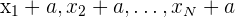

Parámetros de centralización y posición
Los parámetros estadísticos sirven para sintetizar o resumir la información dada por una tabla o por una gráfica.
Los parámetros de centralización y posición más utilizados son: la media aritmética, la moda, la mediana y los cuartiles.
MEDIA ARITMÉTICA
La media aritmética es el valor obtenido al sumar todos los datos y dividir el resultado entre el número total de datos. Se denota con el símbolo  y la calculamos de la siguiente manera.
y la calculamos de la siguiente manera.
donde xi representa el valor de la variable, fi cada una de las frecuencias absolutas asociadas a cada valor de variable y N es el número total de datos que tenemos.
Cuando los datos aparezcan agrupados por intervalos calcularemos la media aritmética a partir de las marcas de clase.
Observaciones sobre la media aritmética:
- La media se puede hallar sólo para variables cuantitativas.
- La media es independiente de las amplitudes de los intervalos.
- La media es muy sensible a los valores extremos, también conocidos como valores atípicos, por eso, en ocasiones, y tras un detallado examen, pueden descartarse dichos valores en el cálculo de la media, si son considerados erróneos o poco significativos.
- La media no se puede calcular si hay un intervalo con una amplitud indeterminada.
- Si a todos los valores de la variable se les suma una constante de forma que , la media resultante será .
- Si todos los valores de la variable se multiplican por un mismo número de forma que , la media aritmética queda multiplicada por dicho número de forma que .
*Ejemplo:
En un test realizado a un grupo de 42 personas se han obtenido las puntuaciones que se muestran en la siguiente tabla.
| Intervalos | Marca de clase (mi) | Frecuencia absoluta (fi) |
| [10,20) | 15 | 1 |
| [20,30) | 25 | 8 |
| [30,40) | 35 | 10 |
| [40,50) | 45 | 9 |
| [50,60) | 55 | 8 |
| [60,70) | 65 | 4 |
| [70,80) | 75 | 2 |
Para obtener la media, en primer lugar, vamos a calcular la sumatoria de mi*fi (recordad que para datos agrupados usaremos la marca de clase (mi) en vez de xi), crearemos una nueva columna para los productos de la variable con su correspondiente frecuencia absoluta y lo sumaremos todo. También tenemos que calcular N que es la sumatoria de las frecuencias absolutas.
| Intervalos | Marca de clase (mi) | Frecuencia absoluta (fi) | mi*fi |
| [10,20) | 15 | 1 | 15 |
| [20,30) | 25 | 8 | 200 |
| [30,40) | 35 | 10 | 350 |
| [40,50) | 45 | 9 | 405 |
| [50,60) | 55 | 8 | 440 |
| [60,70) | 65 | 4 | 260 |
| [70,80) | 75 | 2 | 150 |
| Total | 42 | 1820 |
Aplicando la fórmula:
MODA
La moda se representa con el símbolo Mo y es el valor de la variable (xi) que tiene la mayor frecuencia absoluta. En caso de una variable continua la moda será la marca de clase del intervalo con mayor frecuencia absoluta. Dicho intervalo recibe el nombre de clase modal.
Observaciones sobre la moda:
- Se puede hallar la moda para variables cualitativas y cuantitativas.
- Los valores extremos, a diferencia de lo que pasaba con la media aritmética, no influyen en la moda.
- Puede ocurrir que la moda no sea única, ya que puede haber mas de un valor de la variable con frecuencia absoluta máxima. Diremos en entonces que la distribución de datos es bimodal, trimodal... o, en general multimodal.
*Ejemplo para variables discretas:
Calcula la moda de los siguientes datos :
a) 7, 7, 5, 3, 9, 8, 10 b) 8, 2, 5, 4, 6, 6, 6, 7
Mo = 7 Mo = 6
c) 2, 4, 3, 2, 3, 5, 8, 7 d) 4, 4, 4, 6, 7, 6, 6, 5, 5, 5, 8, 7, 9
Mo = 2 y 4 (bimodal) Mo = 4, 5 y 6 (trimodal)
*Ejemplo para variables continuas:
Se ha pasado un test de 79 preguntas a 600 personas. El número de respuestas correctas se refleja en la siguiente tabla :
| Respuestas | [ 0, 10 ) | [ 10, 20 ) | [ 20, 30 ) | [ 30, 40 ) | [ 40, 50 ) | [ 50, 60 ) | [ 60, 70 ) | [ 70, 80 ) |
| Nº de personas | 40 | 60 | 75 | 90 | 105 | 85 | 80 | 65 |
Como se trata de una variable continua calculamos su clase modal. la variable que más se repita se encuentra en el intervalo [40,50). Como sabemos la moda es la marca de clase del intervalo que mas se repite por lo que Mo = (40+50)/2 = 45
MEDIANA
La mediana es el valor que ocupa el lugar central de todos los datos cuando éstos están ordenados de menor a mayor y se representa con el símbolo Me. Divide los datos en 2 partes iguales y deja por debajo y por encima el 50% de la distribución de datos.
Si el número de datos es impar, la mediana coincide con el valor de datos que queda en el centro.
Si el número de datos es par, existen 2 datos que ocupan la posición central. En este caso, se suman los 2 valores y se divide el resultado entre 2.
Para datos agrupados en intervalos, definimos la clase medianal como el intervalo que contiene el dato central y como aproximación a la mediana tomamos la marca de clase de la clase medianal.
Observaciones sobre la mediana:
- La mediana se puede hallar solo para variables cuantitativas y cualitativas de tipo ordinal.
- Es más fácil de calcular observando las frecuencias acumuladas.
- La mediana, a diferencia de la media, se considera una medida de tendencia central robusta. Aunque los extremos delos datos se vean alterados, la mediana permanece invariable.
*Ejemplo para variables discretas:
- En la distribución (2, 7, 9, 12,15) Me = 9, porque hay una cantidad impar de datos y 9 esta en el medio de la distribución ordenada.
- En la distribución (2, 7, 9, 12, 15, 20) Me = (9+12)/2 = 10.5, porque hay una cantidad par de datos y se deben promediar los dos valores centrales.
*Ejemplo para variables continuas:
Según el siguiente conjunto de datos:
| Intervalos | mi | fi | Fi |
| [ 0, 10 ) | 5 | 40 | 40 |
| [ 10, 20 ) | 15 | 60 | 100 |
| [ 20, 30 ) | 25 | 75 | 175 |
| [ 30, 40 ) | 35 | 90 | 265 |
| [ 40, 50 ) | 45 | 105 | 370 |
| [ 50, 60 ) | 55 | 85 | 455 |
| [ 60, 70 ) | 65 | 80 | 535 |
| [ 70, 80 ) | 75 | 65 | 600 |
N = 600 por tanto N/2 = 300
La mediana estará en el primer intervalo cuyo Ni sea mayor o igual a 300, es decir en el intervalo medianal [ 40, 50 ) por tanto como aproximación a la mediana tomamos la marca de clase de dicho intervalo. Me = 45
Relaciones entre media, mediana y moda. Medidas de simetría
Una distribución de frecuencias decimos que es simétrica cuando lo es su representación gráfica respecto al eje vertical o equivalentemente cuando son iguales las frecuencias correspondientes a valores de la variable equidistantes de un punto central.
Si la distribución es simétrica coinciden la media, la mediana y la moda ( =Me=Mo). (En el caso de distribuciones bimodales o con más de una moda sólo coinciden la media y la mediana).
=Me=Mo). (En el caso de distribuciones bimodales o con más de una moda sólo coinciden la media y la mediana).
Cuando no hay simetría se dice que la distribución es asimétrica, entre los tipos de asimetría posibles los dos fundamentales son:
- Asimetría positiva o a la derecha: Mayor desplazamiento de los datos hacía la derecha (las frecuencias más altas se encuentran en el lado izquierdo de la media y las más bajas en el lado derecho). La media se desplazará a la derecha y por tanto es mayor que la mediana (
 > Me).
> Me). - Asimetría negativa o a la izquierda: Mayor desplazamiento de los datos hacía la izquierda (las frecuencias más altas se encuentran en el lado derecho de la media y las más bajas en el lado izquierdo ). La media se desplazará hacía la izquierda y por tanto será menor que la mediana ( < Me).
* A continuación os dejo unos videos para calcular media, mediana y moda tanto en variables discretas como continuas.
CUARTILES
Los cuartiles Q1, Q2 y Q3 son los tres valores de la variable que dividen un conjunto de datos ordenados en 4 partes iguales, es decir, determinan los valores correspondientes al 25%, al 50% y al 75% de los datos.
Observaciones:
- Para calcular los cuartiles la variable debe ser cuantitativa.
- El 2º cuartil Q2 coincide siempre con la mediana.
- Al igual que la mediana es mas fácil de calcular observando las frecuencias acumuladas.
- Si la variable es continua tomamos como valor la marca de clase.
Para calcular los valores de cada cuartil:
Ordenamos los datos de menor a mayor y los contamos (N).
Calculamos la posición p1, p2 y p3 de los cuartiles:
p1 = (1/4)*N p2 = (2/4)*N p3 = (3/4)*N
Pueden darse 2 casos:
- Si p es un número entero, el cuartil Q es la media aritmética de los datos que ocupan p y p+1.
- Si p no es un número entero, se redondea al primer entero mayor que p.
*Ejemplo:
Calcula los cuartiles de la siguiente serie de datos: 52 34 21 55 34 21 55 45 21 34 21 55
Empezamos ordenando los datos de menor a mayor
21 21 21 21 34 34 34 45 52 55 55 55
Tenemos N = 12 datos ordenados.
p1 = (1/4)*12 = 3 p2 = (2/4)*12 = 6 p3 = (3/4)*12 = 9
Al ser números enteros, los cuartiles serán las medias aritméticas de los valores que ocupan la posición p y p+1 de los datos ordenados.
Q1 = (21+21)/2 = 21 Q2 = (34+34)/2 = 34 Q3 = (52+55)/2 = 53,5